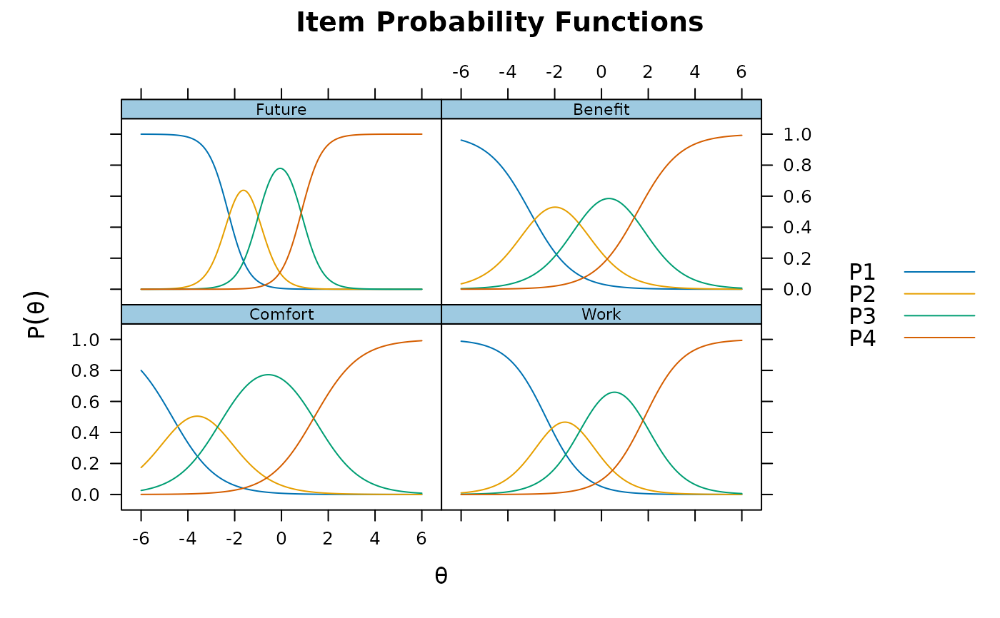

A 4-item data set borrowed from ltm package in R, first example
of the grm() function. See more complete documentation therein.
Chalmers, R., P. (2012). mirt: A Multidimensional Item Response Theory Package for the R Environment. Journal of Statistical Software, 48(6), 1-29. doi:10.18637/jss.v048.i06
# \donttest{
itemstats(Science)
#> $overall
#> N mean_total.score sd_total.score ave.r sd.r alpha
#> 392 11.668 2.003 0.275 0.098 0.598
#>
#> $itemstats
#> N mean sd total.r total.r_if_rm alpha_if_rm
#> Comfort 392 3.120 0.588 0.596 0.352 0.552
#> Work 392 2.722 0.807 0.666 0.332 0.567
#> Future 392 2.990 0.757 0.748 0.488 0.437
#> Benefit 392 2.837 0.802 0.684 0.363 0.541
#>
#> $proportions
#> 1 2 3 4
#> Comfort 0.013 0.082 0.679 0.227
#> Work 0.084 0.250 0.526 0.140
#> Future 0.036 0.184 0.536 0.245
#> Benefit 0.054 0.255 0.492 0.199
#>
mod <- mirt(Science, 1)
plot(mod, type = 'trace')

# }